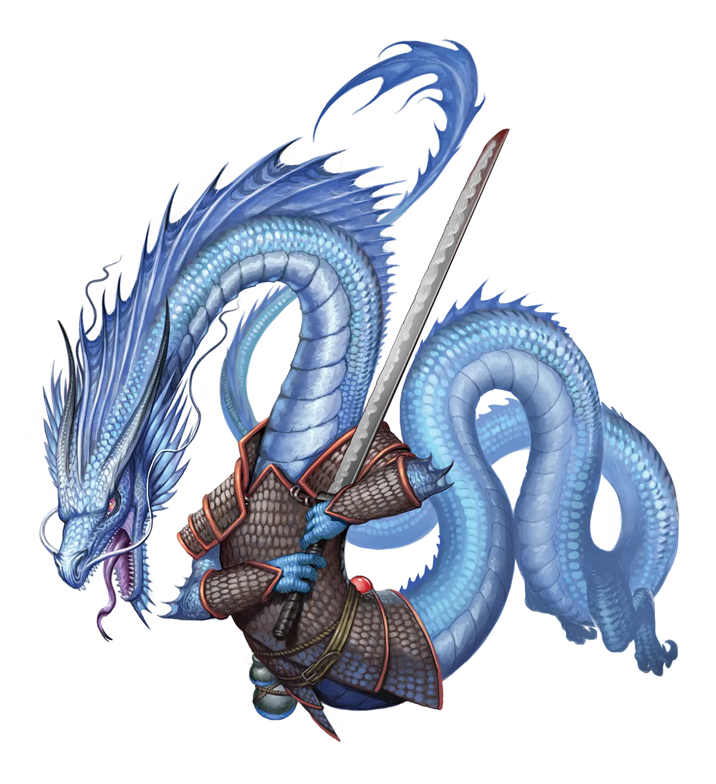
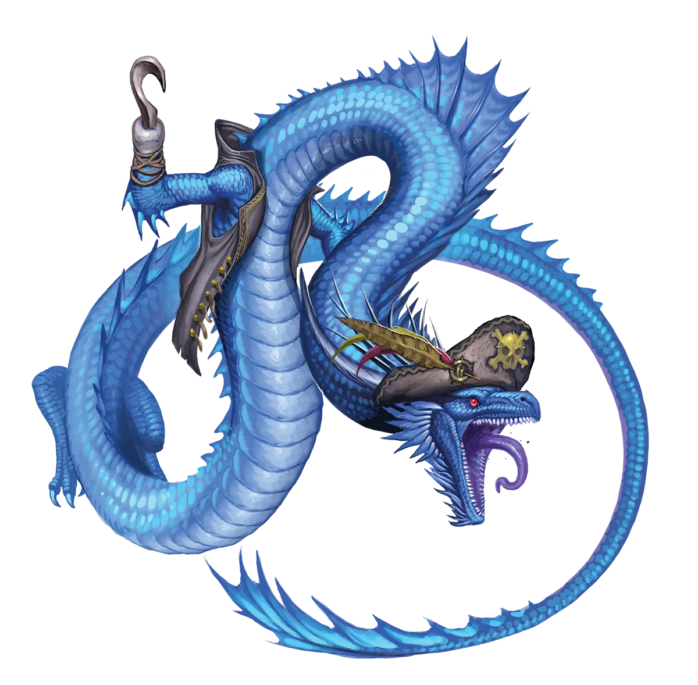

沧海变迁
以冒险者的身份生活对许多海龙而言是系统性的冲击，他们更习惯于懒散的仁慈、赞美和奢华的生活，而非艰辛劳作外加些许生命风险。别告诉他们这些，因为他们自视为宗教象征和活的神明，但我感觉他们往往不过是其所在区域地位较高、备受宠爱的宠物和苑像罢了。然而，无论好坏，我想在被迫投入潮池深水后，他们倒确实显得相当适应。至少有一点与大多数冒险者很契合：那种自命不凡、理应因“善行”而获得赞美和奖赏的感觉。
海龙 Sea Dragon |
|
|
永恒之光仪式代表着对典型海龙生活方式的一次重大瓦解，但鉴于海龙善变且反复无常的天性，有时这种瓦解正是海龙所寻求的。尽管如此，海龙早已习惯了来自农民、水手以及所有依赖天气、风和海浪谋生者的崇拜与敬仰，因此，失去激发那种敬畏之力的能力，即使是暂时的，也对其自我构成了沉重打击。正因如此，通常是较为年轻或地位未固的海龙进行永恒之光仪式，或是那些生活在不熟悉海龙、尚未建立对其崇拜传统的地区的海龙。年轻的海龙可能抓住此仪式作为快速获取更强大力量、从而赢得传统上仅赐予年长者的敬仰的途径。就传统派海龙而言，他们并不真正在意永恒海龙是否进行了永恒之光仪式。然而，他们确实热衷于向其永恒同胞提供各种善意但最终不切实际的建议，因为传统派海龙无法共享永恒海龙的经历和视角，因而无法真正理解其处境。 永恒海龙通常会进行冒险以帮助他人并赢得他们的赞美和敬仰，尤其是那些崇拜海龙的传统群体，如海员或农民。因此，他们常常加入拥有船只的队伍，在海上航行探索冒险。总的来说，他们与愿意崇拜他们的结伙相处得尤为融洽，尽管这并不一定需要过于铺张的颂词。与傲慢的红龙和自负的水晶龙不同，海龙同样偏好简单、安静的崇拜与反思，以及真诚的感谢表达。一般而言，海龙更喜欢乐于助人的善良结伙，因为他们希望因爱与感激而受到尊崇，而非恐惧。除此之外，他们对同伴冒险者附加的条件很少，同样可能加入由永光龙类组成的全龙队伍、包含各种种族的混合队伍，或除海龙外全是乔乔里族的队伍。话虽如此，无法欣赏海龙善变情绪的团体可能会随着时间推移渐渐令龙感到厌倦。而那些保持开放心态的人，则会发现与永恒海龙保持友谊并不困难，即使他们无意崇拜这条龙。海龙变幻莫测且迅捷，偏好能让他们施展灵巧特技动作并迅速穿越战场的职业，如武僧或游荡者。他们也可能会涉足神术魔法，作为牧师或圣武士，以便向那些寻求尊崇他们的人赐予神性恩惠。 沧海变迁 以冒险者的身份生活对许多海龙而言是系统性的冲击，他们更习惯于懒散的仁慈、赞美和奢华的生活，而非艰辛劳作外加些许生命风险。别告诉他们这些，因为他们自视为宗教象征和活的神明，但我感觉他们往往不过是其所在区域地位较高、备受宠爱的宠物和苑像罢了。然而，无论好坏，我想在被迫投入潮池深水后，他们倒确实显得相当适应。至少有一点与大多数冒险者很契合：那种自命不凡、理应因“善行”而获得赞美和奖赏的感觉。 海龙特质 Sea Dragon Traits 你出身于一脉性情温和却反复无常的气象主宰――海龙世系。 |
  |